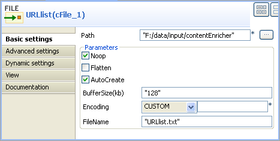
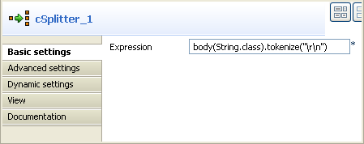
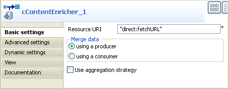
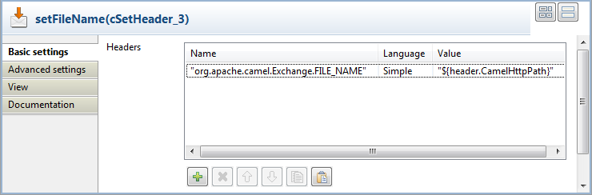
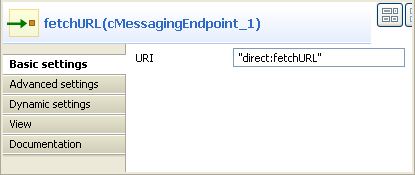
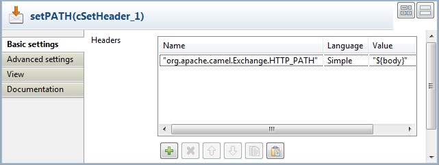
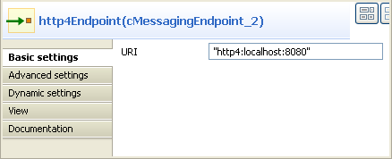

|
Famille de composant |
Transformation | |
|
Fonction |
Le composant cContentEnricher est conçu pour utiliser un consommateur ou un producteur afin d'obtenir des données supplémentaires. | |
|
Objectif |
Le cContentEnricher vous permet d'utiliser un consommateur ou un producteur pour obtenir des données supplémentaires. | |
|
Basic settings |
Resource URI |
Cette option fait référence à la destination du message si la case using a producer est cochée ; elle fait référence à la source à partir de laquelle un message sera obtenu si la case using a consumer est cochée. |
|
|
Using a producer |
Cochez cette case pour utiliser un producteur pour fournir des données supplémentaires, c'est-à-dire pour envoyer un message à l'URI définie. |
|
|
Using a consumer |
Cochez cette case pour utiliser un consommateur pour obtenir des données supplémentaires, c'est-à-dire effectuer une requête sur un message depuis l'URI définie. |
|
|
Use Aggregation Strategy |
Cochez cette case pour définir la stratégie d'agrégation pour assembler le message de base et les données supplémentaires. |
|
|
Specify timeout |
Cette zone apparaît lorsque la case Using a consumer est cochée. Les options de délai avant suspension sont les suivantes : Wait until a message arrive : le composant attend un message. Immediately polls the message : le composant interroge immédiatement l'URI définie. Waiting at most until the timeout triggers : cochez cette case pour saisir un délai avant suspension en millisecondes. Le composant attend le message uniquement durant une période de temps définie. |
|
Utilisation |
Le cContentEnricher vous permet d'utiliser un consommateur ou un producteur pour obtenir des données supplémentaires. | |
|
Limitation |
n/a | |
Dans ce scénario, vous allez utiliser le composant Camel HTTP4 et le composant cContentEnricher pour récupérer des messages à partir d'une liste d'URLs. Pour ce faire, vous devez construire deux sous-routes, une pour lire un fichier avec une liste d'URLs et pour envoyer des messages dans le système de fichiers local, l'autre pour récupérer les messages de ces URLs.
Dans cet exemple, vous allez prendre une liste d'URLs du serveur Tomcat local comme exemple. Vous devez donc démarrer Apache Tomcat avant d'exécuter la Route.
Un fichier .txt URLlist est utilisé pour fournir la liste d'URLs, comme
ci-dessous.
docs/introduction.html docs/setup.html

De la Palette, glissez-déposez un cSplitter, un cJavaDSLProcessor, un cContentEnricher, deux cFile, deux cMessagingEndpoint et trois cSetHeader dans l'espace de modélisation graphique.
Renommez les composants afin d'identifier leur rôle dans la Route et reliez-les à l'aide de liens Row > Route.
Procédure 7.1. Configurer la première sous-route
Double-cliquez sur le composant URLlist pour afficher sa vue Basic settings.
Dans le champ Path, parcourez votre système jusqu'au fichier dans lequel la liste d'URLs est sauvegardée.
Dans le champ FileName, saisissez le nom du fichier URLlist.txt.
Double-cliquez sur le cSplitter pour afficher sa vue Basic settings.
Dans le champ Expression, saisissez le code
body(String.class).tokenize("\r\n")pour diviser le message de chaque ligne en sous-messages.Note
Ce code est valable uniquement sous Windows. Sous Unix, modifiez-le en
body(String.class).tokenize("\n"), pour Mac, enbody(String.class).tokenize("\r").Double-cliquez sur le cJavaDSLProcessor pour afficher sa vue Basic settings.

Dans le champ Code, saisissez le code
.log("splitterOutput: ${body}")pour diviser le corps du message.Double-cliquez sur le cContentEnricher pour afficher sa vue Basic settings.
Sélectionnez l'option using a producer pour utiliser un producteur afin de fournit des données supplémentaires et envoyer le message à une URI définie.
Dans le champ Resource URI, saisissez
"direct:fetchURL", où le message sera livré.Double-cliquez sur le setFileName pour afficher sa vue Basic settings.
Cliquez sur [+] pour ajouter une ligne au tableau Headers.
Dans le champ Name, saisissez
org.apache.camel.Exchange.FILE_NAMEpour définir le nom du fichier pour chaque message entrant.Sélectionnez Simple dans la liste Language.
Dans le champ Value, saisissez
"${header.CamelHttpPath}"pour obtenir le chemin de l'URI du message entrant.Double-cliquez sur le retrievedFiles pour afficher sa vue Basic settings.

Dans le champ Path, parcourez votre système jusqu'au fichier de destination dans lequel vos messages seront sauvegardés.
Procédure 7.2. Configurer la seconde sous-route
Double-cliquez sur le composant fetchURL pour afficher sa vue Basic settings.
Dans le champ URI, saisissez "direct:fetchURL", définie dans le composant cContentEnricher.
Double-cliquez sur le composant setURI pour afficher sa vue Basic settings.

Cliquez sur [+] pour ajouter une ligne au tableau Headers.
Dans le champ Name, saisissez
org.apache.camel.Exchange.HTTP_URIpour définir l'URI HTTP de chaque message.Sélectionnez Simple dans la liste Language.
Dans le champ Value, saisissez
"http://localhost:8080", du serveur Tomcat local.Double-cliquez sur le composant setPATH pour afficher sa vue Basic settings.
Cliquez sur [+] pour ajouter une ligne au tableau Headers.
Dans le champ Name, saisissez
org.apache.camel.Exchange.HTTP_PATHpour définir le chemin HTTP de chaque message.Sélectionnez Simple dans la liste Language.
Dans le champ Value, saisissez
"${body}", divisé depuis le message original.Double-cliquez sur le http4Endpoint pour afficher sa vue Basic settings.
Dans le champ URI, saisissez "http4:localhost:8080" pour consommer des ressources HTTP du serveur Tomcat local.
Cliquez sur l'onglet Advanced settings. Cliquez sur le bouton
 au bas de la table Dependencies pour y ajouter une ligne et sélectionnez
au bas de la table Dependencies pour y ajouter une ligne et sélectionnez
http4dans la liste déroulante. Pour plus d'informations concernant HTTP4, consultez le site Web http://camel.apache.org/http4.html (en anglais).
Appuyez sur Ctrl+S pour sauvegarder votre Route.
Cliquez sur l'onglet Code au bas de l'espace de modélisation graphique afin de visualiser le code généré

Comme affiché ci-dessus, une route est construite de
URLlistversretrievedFilesvia les méthodes.split,.log,.enrichet.setHeader. L'autre route de messages est construite defetchURLvershttp4Endpointvia deux.setHeader.Appuyez sur F6 pour exécuter la Route.
Résultat : Le message divisé est affiché dans le console de la vue Run.

Les messages de la liste d'URLs sont sauvegardés dans le répertoire défini du système de fichiers local.

Pour un scénario associé, consultez :